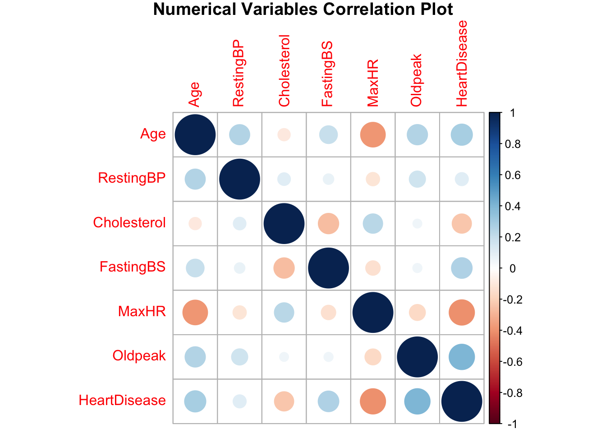

Chapter 2 EDA
Firstly, we load the data and convert all character variables to factor variables.
## Age Sex ChestPainType RestingBP Cholesterol
## Min. :28.00 F:193 ASY:496 Min. : 0.0 Min. : 0.0
## 1st Qu.:47.00 M:725 ATA:173 1st Qu.:120.0 1st Qu.:173.2
## Median :54.00 NAP:203 Median :130.0 Median :223.0
## Mean :53.51 TA : 46 Mean :132.4 Mean :198.8
## 3rd Qu.:60.00 3rd Qu.:140.0 3rd Qu.:267.0
## Max. :77.00 Max. :200.0 Max. :603.0
## FastingBS RestingECG MaxHR ExerciseAngina Oldpeak
## Min. :0.0000 LVH :188 Min. : 60.0 N:547 Min. :-2.6000
## 1st Qu.:0.0000 Normal:552 1st Qu.:120.0 Y:371 1st Qu.: 0.0000
## Median :0.0000 ST :178 Median :138.0 Median : 0.6000
## Mean :0.2331 Mean :136.8 Mean : 0.8874
## 3rd Qu.:0.0000 3rd Qu.:156.0 3rd Qu.: 1.5000
## Max. :1.0000 Max. :202.0 Max. : 6.2000
## ST_Slope HeartDisease
## Down: 63 Min. :0.0000
## Flat:460 1st Qu.:0.0000
## Up :395 Median :1.0000
## Mean :0.5534
## 3rd Qu.:1.0000
## Max. :1.0000## Age Sex ChestPainType RestingBP Cholesterol FastingBS RestingECG MaxHR
## 1 40 M ATA 140 289 0 Normal 172
## 2 49 F NAP 160 180 0 Normal 156
## 3 37 M ATA 130 283 0 ST 98
## 4 48 F ASY 138 214 0 Normal 108
## 5 54 M NAP 150 195 0 Normal 122
## ExerciseAngina Oldpeak ST_Slope HeartDisease
## 1 N 0.0 Up 0
## 2 N 1.0 Flat 1
## 3 N 0.0 Up 0
## 4 Y 1.5 Flat 1
## 5 N 0.0 Up 0This dataset contains 14 variables that could be used to foresee the development of a potential heart condition including age, sex, whether the patient excercise, maximum heart rate achieved , Chest Pain type and so on. Here, we select the HeartDisease, a binary variable that indicates whether a person has a heart attack or not as the response variables. Here are the first five columns of the dataset.
Let examine the data first, Here is te correlogram of all the numeric variables of the data. 
The heart disease dataset’s correlation plot displays the correlation coefficients between various pairs of variables. Age, Resting Blood Pressure, Cholesterol, Max Heart Rate, Old Peak, and Heart Disease are the variables included in the heatmap.
The correlation coefficient between any two variables is shown in each cell of the heatmap. The cell’s color serves as a gauge for the degree of correlation: orange denotes a negative correlation, blue denotes a positive correlation, and white denotes no correlation. The correlation coefficient’s magnitude is represented by the color’s hue, with stronger correlations being represented by darker hues.
For instance, a positive correlation between age and the presence of heart disease is indicated by the light blue color of the cell where Age and HeartDisease intersect. The cell at the intersection of cholesterol and heart disease, on the other hand, is light orange blue, indicating a negative correlation between the presence of heart disease and cholesterol levels.
Based on the result, we can see that there are some correlations between variables. Hence, I decide to include the linear model, logistic models and the random forest model as candidate models.
Now, let’s split the data into two parts. One is data with ‘HeartDisease’ is 1. In this part of the dataset, the patients have more chance of heart attack. The other is data with ‘HeartDisease’ is 0. In this part of the dataset, the patients have less chance of heart attack. I will exam the histogram of numeric variables in these two data set.
Here is the result of the dataset with with ‘HeartDisease’ 0.
Here is the result of the dataset with with ‘HeartDisease’ 1.

Based on the result, we can see that for variable ‘Oldpeak’, the is a difference of their distribution in different dataset.
To build and test the models, we split data with 80/20.